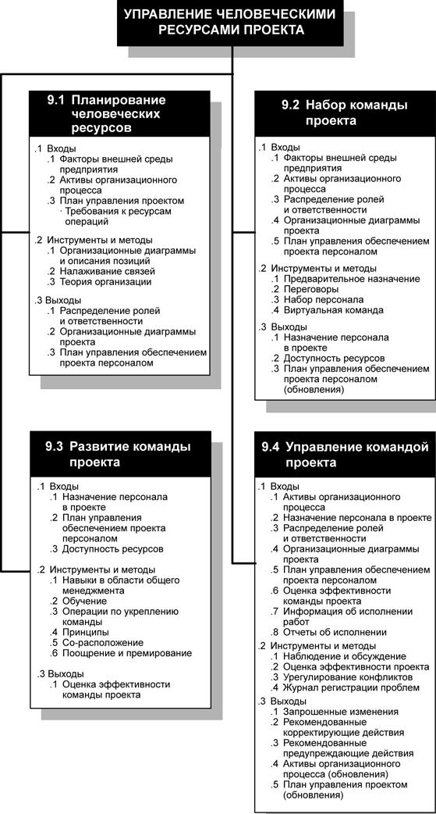
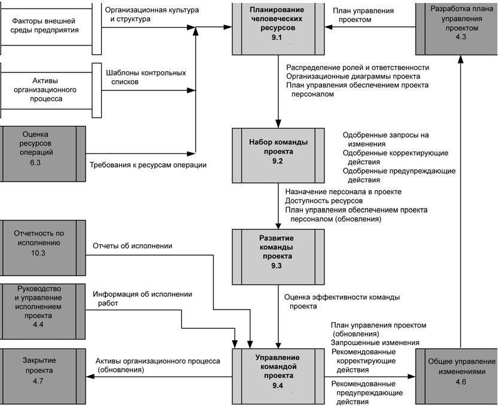

Введение
Управление человеческими ресурсами проекта включает в себя процессы по организации команды проекта и управления ей. Команда проекта состоит из людей, каждому из которых назначена определенная роль и ответственность за выполнение проекта. После распределения ролей и ответственности между членами команды проекта, они должны принимать активное участие в планировании проекта и принятии решений. Привлечение членов команды к участию на ранних стадиях проекта позволяет использовать имеющийся у них опыт при планировании проекта и укрепляет нацеленность команды на достижение результатов. По мере выполнения проекта профессиональный и численный состав членов команды проекта может меняться. Членов команды проекта также называют "персоналом проекта".
Команда управления проектом - это часть команды проекта; она отвечает за выполнение операций по управлению проектом (например, планирование, управление и завершение). Эта группа может называться ядром, исполняющей или руководящей командой. На малых проектах обязанности управления проектом могут быть распределены между всеми членами команды или поручены непосредственно руководителю проекта. Спонсор проекта работает в контакте с командой управления проектом и обычно принимает участие в решении таких вопросов, как финансирование проекта, прояснение содержания проекта и иных вопросов, влияющих на производительность и экономическую эффективность проекта.
На рис. 12.1 приводится общая схема процессов управления человеческими ресурсами проекта, а на рис. 12.2 показана диаграмма зависимостей этих процессов и их входы, выходы и другие процессы из данной области знаний.

Рисунок 12.1 - Общая схема управления человеческими ресурсами проекта

Рисунок 12.2 - Диаграмма зависимости процессов для процесса управления человеческими ресурсами проекта
Процессы управления человеческими ресурсами проектов включают в себя следующее:
9.1 Планирование человеческих ресурсов - определение и документальное оформление ролей, ответственности и подотчетности, а также создание плана управления обеспечением проекта персоналом.
9.2 Набор команды проекта - привлечение человеческих ресурсов, необходимых для выполнения проекта.
9.3 Развитие команды проекта - повышение квалификации членов команды проекта и укрепление взаимодействия между ними с целью повышения эффективности исполнения проекта.
9.4 Управление командой проекта - контроль за эффективностью членов команды проекта, обеспечение обратной связи, решение проблем и координация изменений, направленных на повышение эффективности исполнения проекта.
Эти процессы взаимодействуют как друг с другом, так и с процессами из других областей знаний. В зависимости от потребностей проекта в каждом процессе могут принимать участие один или несколько человек или групп.
На рис. 12.2 изображены основные пути взаимодействия управления человеческими ресурсами с другими процессами проекта. В качестве примеров взаимодействия, подлежащих дополнительному планированию, можно привести следующие ситуации:
- После того как первоначальная команда проекта создала иерархическую структуру работ, может возникнуть необходимость расширения команды.
- После расширения состава команды проекта уровень их подготовки может увеличить или уменьшить риски проекта, что приводит к дополнительному планированию рисков.
- Если оценка длительности операций была выполнена до определения окончательного состава команды проекта, то с привлечением новых членов команды, с учетом их квалификации, может возникнуть необходимость в изменении длительности и расписания операций.